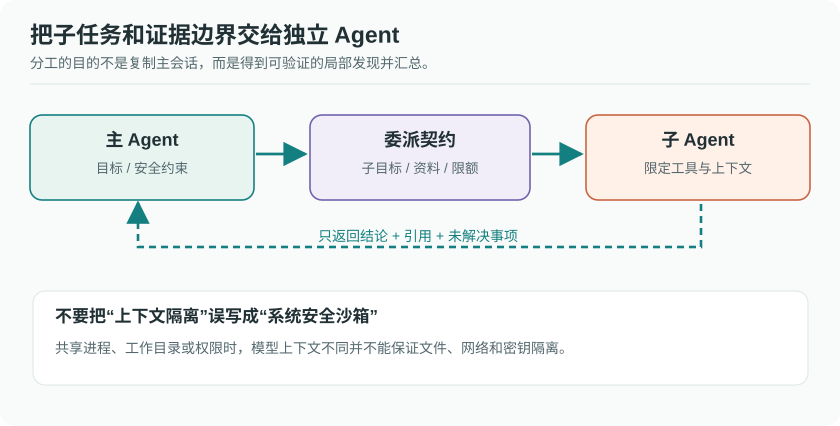
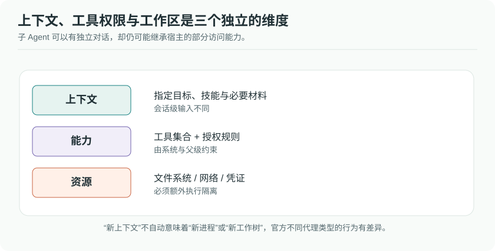

Sub-Agent 架构：委派契约与三重隔离边界
从具体的代码审查任务出发，理解独立上下文、工具授权和系统资源隔离之间的区别，使用可验证委派契约减少上下文污染与权限误解。
为什么不让一个 Agent 阅读全部材料
假设主 Agent 正在修复大型仓库的回归：测试目录、构建脚本、历史变更和依赖说明同时需要阅读。如果所有原始日志都进入一个会话，就会占据宝贵上下文，并让最终回答难以分清哪些事实来自哪份文件。
Sub-Agent 的工程价值是把独立子问题分出去：例如“找出断言失败的最小原因”，仅向子任务提供必要文件、目标与约束，再把有来源的发现交回主任务。分工需要一份清晰契约，而不是把另一个模型叫出来就自动可靠。

官方支持哪些 Sub-Agent 概念
Claude Code 文档公开说明了内置与自定义 Subagents、模型和工具限制、权限模式、技能预载、持久记忆，以及前台/后台运行。不同代理类型加载的项目指令、上下文与工具并不完全相同；不能笼统断言“每个子 Agent 启动时只有空消息历史”或“必然 fork 一个进程”。
| 概念 | 用来解决 | 不能推断 |
|---|---|---|
| 独立 Agent 上下文 | 限制子任务看到的对话范围 | 一定创建新 OS 进程 |
| 限定工具与权限 | 减少子任务操作面 | 可绕过父级或管理策略 |
| 持久子代理记忆 | 复用跨次任务的知识 | 所有子代理天生无状态 |
| Fork 与背景任务 | 按需求共享或隔离历史/并发工作 | 和普通 Sub-Agent 等同 |
上下文隔离不等于安全隔离

同一进程内的两个调用就算拥有不同消息历史，也可能共用进程身份、文件权限、网络连接、内存或工作区。想处理不可信代码，应使用真正的容器/进程/工作树隔离与策略检查，而不能仅靠“子 Agent 不知道主 Agent 的历史”防止越权。
反过来，主 Agent 不能仅因为子 Agent 提供了漂亮的结论，就假设文件已经修改、测试已经通过；结果必须能追溯到对应工具输出。
从一个有限委派契约开始
教学用 Delegation 仅包含名称、目标、可访问的证据引用、受限工具集合和最大轮次。子 Agent 的能力集合必须是父级允许集合的子集。
job = delegate(
name="review",
goal="Find the failing assertion",
refs=("tests/test_parser.py", "src/parser.py"),
parent_allowed=frozenset({"Read", "Grep"}),
requested_tools=frozenset({"Read"}),
budget=4,
)
assert job.allowed_tools == frozenset({"Read"})这段代码只描述分配契约，不会调用模型，也没有真的向工具授予权限。宿主程序在执行时仍要按工具请求逐次确认允许范围。
把结果变成可审查的发现
子任务的返回结构应包含总结、证据引用、未解决的问题。比如“测试断言预期空字符串但实际为 None”属于可复核的发现；“已经修好了”如果没有测试与补丁记录，只能当作未经验证的主张。
result = Finding(
agent="review",
summary="Test expects an empty string for blank input",
sources=("tests/test_parser.py",),
unresolved=("Need focused runtime test",),
)
validate_result(job, result)教学校验保证引用来自交付的有限清单；真实系统应允许子 Agent 发现新资料，但需要提供可追踪的路径、权限和来源记录，不能偷偷扩大读取范围。
什么时候不应该委派
委派引入额外延迟、token 成本、结果合并、冲突与安全边界。如果问题只涉及一个函数或单次只读查询，直接使用工具通常比创建另一个 Agent 更简单。若两个代理同时编辑相同文件，结果可能产生非确定性覆盖。若子任务需要访问秘密，应先评估是否可以用非敏感摘要替代。
版本敏感提醒
旧稿把固定“六种 TaskType”与某个内部 AgentTool 函数链作为产品源码事实。官方文档随版本对内置 Agent 和配置字段有更新，不能只靠私有源码传闻锁定数量与实现。
练习：用权限子集测试阻止升级
运行 python3 -m unittest discover -s examples -p 'test_*.py'，检查 test_delegation_contract.py。测试阻止子 Agent 请求未获父级授权的 Write，以及返回超出任务指定范围的假证据。
参考资料与事实边界
- Claude Code: Create custom subagents — 内置代理、配置、权限、fork 与背景代理的现行行为
- Claude Code: Permissions — 对子代理仍适用的权限边界
- Claude Platform Tool Use — 消息工具调用协议
- Claude Agent SDK: Subagents — 不同于内部私有实现的公开 SDK 接口
本文中的 Delegation 是教学代码，官方具体代理类型、上下文继承、权限模式与版本行为应以 Claude Code 文档为准。